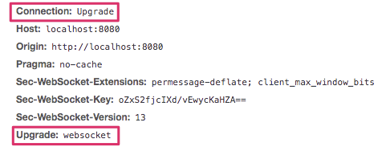
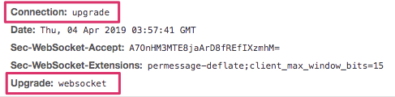
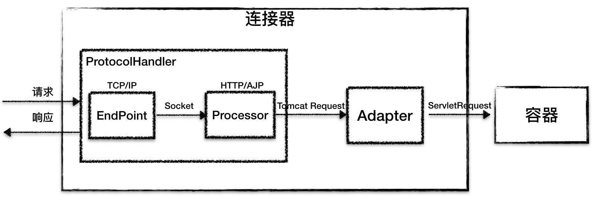
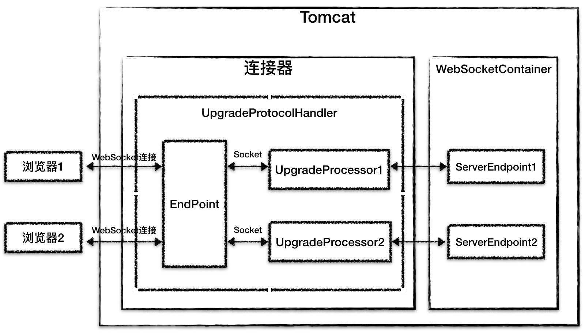

- 00 开篇词 Java程序员如何快速成长？.md
- 01 Web容器学习路径.md
- 02 HTTP协议必知必会.md
- 03 你应该知道的Servlet规范和Servlet容器.md
- 04 实战：纯手工打造和运行一个Servlet.md
- 05 Tomcat系统架构（上）： 连接器是如何设计的？.md
- 06 Tomcat系统架构（下）：聊聊多层容器的设计.md
- 07 Tomcat如何实现一键式启停？.md
- 08 Tomcat的“高层们”都负责做什么？.md
- 09 比较：Jetty架构特点之Connector组件.md
- 10 比较：Jetty架构特点之Handler组件.md
- 11 总结：从Tomcat和Jetty中提炼组件化设计规范.md
- 12 实战：优化并提高Tomcat启动速度.md
- 13 热点问题答疑（1）：如何学习源码？.md
- 14 NioEndpoint组件：Tomcat如何实现非阻塞I_O？.md
- 15 Nio2Endpoint组件：Tomcat如何实现异步I_O？.md
- 16 AprEndpoint组件：Tomcat APR提高I_O性能的秘密.md
- 17 Executor组件：Tomcat如何扩展Java线程池？.md
- 18 新特性：Tomcat如何支持WebSocket？.md
- 19 比较：Jetty的线程策略EatWhatYouKill.md
- 20 总结：Tomcat和Jetty中的对象池技术.md
- 21 总结：Tomcat和Jetty的高性能、高并发之道.md
- 22 热点问题答疑（2）：内核如何阻塞与唤醒进程？.md
- 23 Host容器：Tomcat如何实现热部署和热加载？.md
- 24 Context容器（上）：Tomcat如何打破双亲委托机制？.md
- 25 Context容器（中）：Tomcat如何隔离Web应用？.md
- 26 Context容器（下）：Tomcat如何实现Servlet规范？.md
- 27 新特性：Tomcat如何支持异步Servlet？.md
- 28 新特性：Spring Boot如何使用内嵌式的Tomcat和Jetty？.md
- 29 比较：Jetty如何实现具有上下文信息的责任链？.md
- 30 热点问题答疑（3）：Spring框架中的设计模式.md
- 31 Logger组件：Tomcat的日志框架及实战.md
- 32 Manager组件：Tomcat的Session管理机制解析.md
- 33 Cluster组件：Tomcat的集群通信原理.md
- 34 JVM GC原理及调优的基本思路.md
- 35 如何监控Tomcat的性能？.md
- 36 Tomcat I_O和线程池的并发调优.md
- 37 Tomcat内存溢出的原因分析及调优.md
- 38 Tomcat拒绝连接原因分析及网络优化.md
- 39 Tomcat进程占用CPU过高怎么办？.md
- 40 谈谈Jetty性能调优的思路.md
- 41 热点问题答疑（4）： Tomcat和Jetty有哪些不同？.md
- 特别放送 如何持续保持对学习的兴趣？.md
- 结束语 静下心来，品味经典.md
18 新特性：Tomcat如何支持WebSocket？
我们知道HTTP协议是“请求-响应”模式，浏览器必须先发请求给服务器，服务器才会响应这个请求。也就是说，服务器不会主动发送数据给浏览器。
对于实时性要求比较的高的应用，比如在线游戏、股票基金实时报价和在线协同编辑等，浏览器需要实时显示服务器上最新的数据，因此出现了Ajax和Comet技术。Ajax本质上还是轮询，而Comet是在HTTP长连接的基础上做了一些hack，但是它们的实时性不高，另外频繁的请求会给服务器带来压力，也会浪费网络流量和带宽。于是HTML5推出了WebSocket标准，使得浏览器和服务器之间任何一方都可以主动发消息给对方，这样服务器有新数据时可以主动推送给浏览器。
今天我会介绍WebSocket的工作原理，以及作为服务器端的Tomcat是如何支持WebSocket的。更重要的是，希望你在学完之后可以灵活地选用WebSocket技术来解决实际工作中的问题。
WebSocket工作原理
WebSocket的名字里带有Socket，那Socket是什么呢？网络上的两个程序通过一个双向链路进行通信，这个双向链路的一端称为一个Socket。一个Socket对应一个IP地址和端口号，应用程序通常通过Socket向网络发出请求或者应答网络请求。Socket不是协议，它其实是对TCP/IP协议层抽象出来的API。
但WebSocket不是一套API，跟HTTP协议一样，WebSocket也是一个应用层协议。为了跟现有的HTTP协议保持兼容，它通过HTTP协议进行一次握手，握手之后数据就直接从TCP层的Socket传输，就与HTTP协议无关了。浏览器发给服务端的请求会带上跟WebSocket有关的请求头，比如Connection: Upgrade和Upgrade: websocket。

如果服务器支持WebSocket，同样会在HTTP响应里加上WebSocket相关的HTTP头部。

这样WebSocket连接就建立好了，接下来WebSocket的数据传输会以frame形式传输，会将一条消息分为几个frame，按照先后顺序传输出去。这样做的好处有：
- 大数据的传输可以分片传输，不用考虑数据大小的问题。
- 和HTTP的chunk一样，可以边生成数据边传输，提高传输效率。
Tomcat如何支持WebSocket
在讲Tomcat如何支持WebSocket之前，我们先来开发一个简单的聊天室程序，需求是：用户可以通过浏览器加入聊天室、发送消息，聊天室的其他人都可以收到消息。
WebSocket聊天室程序
浏览器端JavaScript核心代码如下：
var Chat = {};
Chat.socket = null;
Chat.connect = (function(host) {
//判断当前浏览器是否支持WebSocket
if ('WebSocket' in window) {
//如果支持则创建WebSocket JS类
Chat.socket = new WebSocket(host);
} else if ('MozWebSocket' in window) {
Chat.socket = new MozWebSocket(host);
} else {
Console.log('WebSocket is not supported by this browser.');
return;
}
//回调函数，当和服务器的WebSocket连接建立起来后，浏览器会回调这个方法
Chat.socket.onopen = function () {
Console.log('Info: WebSocket connection opened.');
document.getElementById('chat').onkeydown = function(event) {
if (event.keyCode == 13) {
Chat.sendMessage();
}
};
};
//回调函数，当和服务器的WebSocket连接关闭后，浏览器会回调这个方法
Chat.socket.onclose = function () {
document.getElementById('chat').onkeydown = null;
Console.log('Info: WebSocket closed.');
};
//回调函数，当服务器有新消息发送到浏览器，浏览器会回调这个方法
Chat.socket.onmessage = function (message) {
Console.log(message.data);
};
});
上面的代码实现逻辑比较清晰，就是创建一个WebSocket JavaScript对象，然后实现了几个回调方法：onopen、onclose和onmessage。当连接建立、关闭和有新消息时，浏览器会负责调用这些回调方法。我们再来看服务器端Tomcat的实现代码：
//Tomcat端的实现类加上@ServerEndpoint注解，里面的value是URL路径
@ServerEndpoint(value = "/websocket/chat")
public class ChatEndpoint {
private static final String GUEST_PREFIX = "Guest";
//记录当前有多少个用户加入到了聊天室，它是static全局变量。为了多线程安全使用原子变量AtomicInteger
private static final AtomicInteger connectionIds = new AtomicInteger(0);
//每个用户用一个CharAnnotation实例来维护，请你注意它是一个全局的static变量，所以用到了线程安全的CopyOnWriteArraySet
private static final Set<ChatEndpoint> connections =
new CopyOnWriteArraySet<>();
private final String nickname;
private Session session;
public ChatEndpoint() {
nickname = GUEST_PREFIX + connectionIds.getAndIncrement();
}
//新连接到达时，Tomcat会创建一个Session，并回调这个函数
@OnOpen
public void start(Session session) {
this.session = session;
connections.add(this);
String message = String.format("* %s %s", nickname, "has joined.");
broadcast(message);
}
//浏览器关闭连接时，Tomcat会回调这个函数
@OnClose
public void end() {
connections.remove(this);
String message = String.format("* %s %s",
nickname, "has disconnected.");
broadcast(message);
}
//浏览器发送消息到服务器时，Tomcat会回调这个函数
@OnMessage
public void incoming(String message) {
// Never trust the client
String filteredMessage = String.format("%s: %s",
nickname, HTMLFilter.filter(message.toString()));
broadcast(filteredMessage);
}
//WebSocket连接出错时，Tomcat会回调这个函数
@OnError
public void onError(Throwable t) throws Throwable {
log.error("Chat Error: " + t.toString(), t);
}
//向聊天室中的每个用户广播消息
private static void broadcast(String msg) {
for (ChatAnnotation client : connections) {
try {
synchronized (client) {
client.session.getBasicRemote().sendText(msg);
}
} catch (IOException e) {
...
}
}
}
}
根据Java WebSocket规范的规定，Java WebSocket应用程序由一系列的WebSocket Endpoint组成。Endpoint是一个Java对象，代表WebSocket连接的一端，就好像处理HTTP请求的Servlet一样，你可以把它看作是处理WebSocket消息的接口。跟Servlet不同的地方在于，Tomcat会给每一个WebSocket连接创建一个Endpoint实例。你可以通过两种方式定义和实现Endpoint。
第一种方法是编程式的，就是编写一个Java类继承javax.websocket.Endpoint，并实现它的onOpen、onClose和onError方法。这些方法跟Endpoint的生命周期有关，Tomcat负责管理Endpoint的生命周期并调用这些方法。并且当浏览器连接到一个Endpoint时，Tomcat会给这个连接创建一个唯一的Session（javax.websocket.Session）。Session在WebSocket连接握手成功之后创建，并在连接关闭时销毁。当触发Endpoint各个生命周期事件时，Tomcat会将当前Session作为参数传给Endpoint的回调方法，因此一个Endpoint实例对应一个Session，我们通过在Session中添加MessageHandler消息处理器来接收消息，MessageHandler中定义了onMessage方法。在这里Session的本质是对Socket的封装，Endpoint通过它与浏览器通信。
第二种定义Endpoint的方法是注解式的，也就是上面的聊天室程序例子中用到的方式，即实现一个业务类并给它添加WebSocket相关的注解。首先我们注意到@ServerEndpoint(value = "/websocket/chat")注解，它表明当前业务类ChatEndpoint是一个实现了WebSocket规范的Endpoint，并且注解的value值表明ChatEndpoint映射的URL是/websocket/chat。我们还看到ChatEndpoint类中有@OnOpen、@OnClose、@OnError和在@OnMessage注解的方法，从名字你就知道它们的功能是什么。
对于程序员来说，其实我们只需要专注具体的Endpoint的实现，比如在上面聊天室的例子中，为了方便向所有人群发消息，ChatEndpoint在内部使用了一个全局静态的集合CopyOnWriteArraySet来维护所有的ChatEndpoint实例，因为每一个ChatEndpoint实例对应一个WebSocket连接，也就是代表了一个加入聊天室的用户。当某个ChatEndpoint实例收到来自浏览器的消息时，这个ChatEndpoint会向集合中其他ChatEndpoint实例背后的WebSocket连接推送消息。
那么这个过程中，Tomcat主要做了哪些事情呢？简单来说就是两件事情：Endpoint加载和WebSocket请求处理。下面我分别来详细说说Tomcat是如何做这两件事情的。
WebSocket加载
Tomcat的WebSocket加载是通过SCI机制完成的。SCI全称ServletContainerInitializer，是Servlet 3.0规范中定义的用来接收Web应用启动事件的接口。那为什么要监听Servlet容器的启动事件呢？因为这样我们有机会在Web应用启动时做一些初始化工作，比如WebSocket需要扫描和加载Endpoint类。SCI的使用也比较简单，将实现ServletContainerInitializer接口的类增加HandlesTypes注解，并且在注解内指定的一系列类和接口集合。比如Tomcat为了扫描和加载Endpoint而定义的SCI类如下：
@HandlesTypes({ServerEndpoint.class, ServerApplicationConfig.class, Endpoint.class})
public class WsSci implements ServletContainerInitializer {
public void onStartup(Set<Class<?>> clazzes, ServletContext ctx) throws ServletException {
...
}
}
一旦定义好了SCI，Tomcat在启动阶段扫描类时，会将HandlesTypes注解中指定的类都扫描出来，作为SCI的onStartup方法的参数，并调用SCI的onStartup方法。注意到WsSci的HandlesTypes注解中定义了ServerEndpoint.class、ServerApplicationConfig.class和Endpoint.class，因此在Tomcat的启动阶段会将这些类的类实例（注意不是对象实例）传递给WsSci的onStartup方法。那么WsSci的onStartup方法又做了什么事呢？
它会构造一个WebSocketContainer实例，你可以把WebSocketContainer理解成一个专门处理WebSocket请求的Endpoint容器。也就是说Tomcat会把扫描到的Endpoint子类和添加了注解@ServerEndpoint的类注册到这个容器中，并且这个容器还维护了URL到Endpoint的映射关系，这样通过请求URL就能找到具体的Endpoint来处理WebSocket请求。
WebSocket请求处理
在讲WebSocket请求处理之前，我们先来回顾一下Tomcat连接器的组件图。

你可以看到Tomcat用ProtocolHandler组件屏蔽应用层协议的差异，其中ProtocolHandler中有两个关键组件：Endpoint和Processor。需要注意，这里的Endpoint跟上文提到的WebSocket中的Endpoint完全是两回事，连接器中的Endpoint组件用来处理I/O通信。WebSocket本质就是一个应用层协议，因此不能用HttpProcessor来处理WebSocket请求，而要用专门Processor来处理，而在Tomcat中这样的Processor叫作UpgradeProcessor。
为什么叫UpgradeProcessor呢？这是因为Tomcat是将HTTP协议升级成WebSocket协议的，我们知道WebSocket是通过HTTP协议来进行握手的，因此当WebSocket的握手请求到来时，HttpProtocolHandler首先接收到这个请求，在处理这个HTTP请求时，Tomcat通过一个特殊的Filter判断该当前HTTP请求是否是一个WebSocket Upgrade请求（即包含Upgrade: websocket的HTTP头信息），如果是，则在HTTP响应里添加WebSocket相关的响应头信息，并进行协议升级。具体来说就是用UpgradeProtocolHandler替换当前的HttpProtocolHandler，相应的，把当前Socket的Processor替换成UpgradeProcessor，同时Tomcat会创建WebSocket Session实例和Endpoint实例，并跟当前的WebSocket连接一一对应起来。这个WebSocket连接不会立即关闭，并且在请求处理中，不再使用原有的HttpProcessor，而是用专门的UpgradeProcessor，UpgradeProcessor最终会调用相应的Endpoint实例来处理请求。下面我们通过一张图来理解一下。

你可以看到，Tomcat对WebSocket请求的处理没有经过Servlet容器，而是通过UpgradeProcessor组件直接把请求发到ServerEndpoint实例，并且Tomcat的WebSocket实现不需要关注具体I/O模型的细节，从而实现了与具体I/O方式的解耦。
本期精华
WebSocket技术实现了Tomcat与浏览器的双向通信，Tomcat可以主动向浏览器推送数据，可以用来实现对数据实时性要求比较高的应用。这需要浏览器和Web服务器同时支持WebSocket标准，Tomcat启动时通过SCI技术来扫描和加载WebSocket的处理类ServerEndpoint，并且建立起了URL到ServerEndpoint的映射关系。
当第一个WebSocket请求到达时，Tomcat将HTTP协议升级成WebSocket协议，并将该Socket连接的Processor替换成UpgradeProcessor。这个Socket不会立即关闭，对接下来的请求，Tomcat通过UpgradeProcessor直接调用相应的ServerEndpoint来处理。
今天我讲了可以通过两种方式来开发WebSocket应用，一种是继承javax.websocket.Endpoint，另一种通过WebSocket相关的注解。其实你还可以通过Spring来实现WebSocket应用，有兴趣的话你可以去研究一下Spring WebSocket的原理。
课后思考
今天我举的聊天室的例子实现的是群发消息，如果要向某个特定用户发送消息，应该怎么做呢？
不知道今天的内容你消化得如何？如果还有疑问，请大胆的在留言区提问，也欢迎你把你的课后思考和心得记录下来，与我和其他同学一起讨论。如果你觉得今天有所收获，欢迎你把它分享给你的朋友。
© 2019 - 2023 Liangliang Lee. Powered by gin and hexo-theme-book.